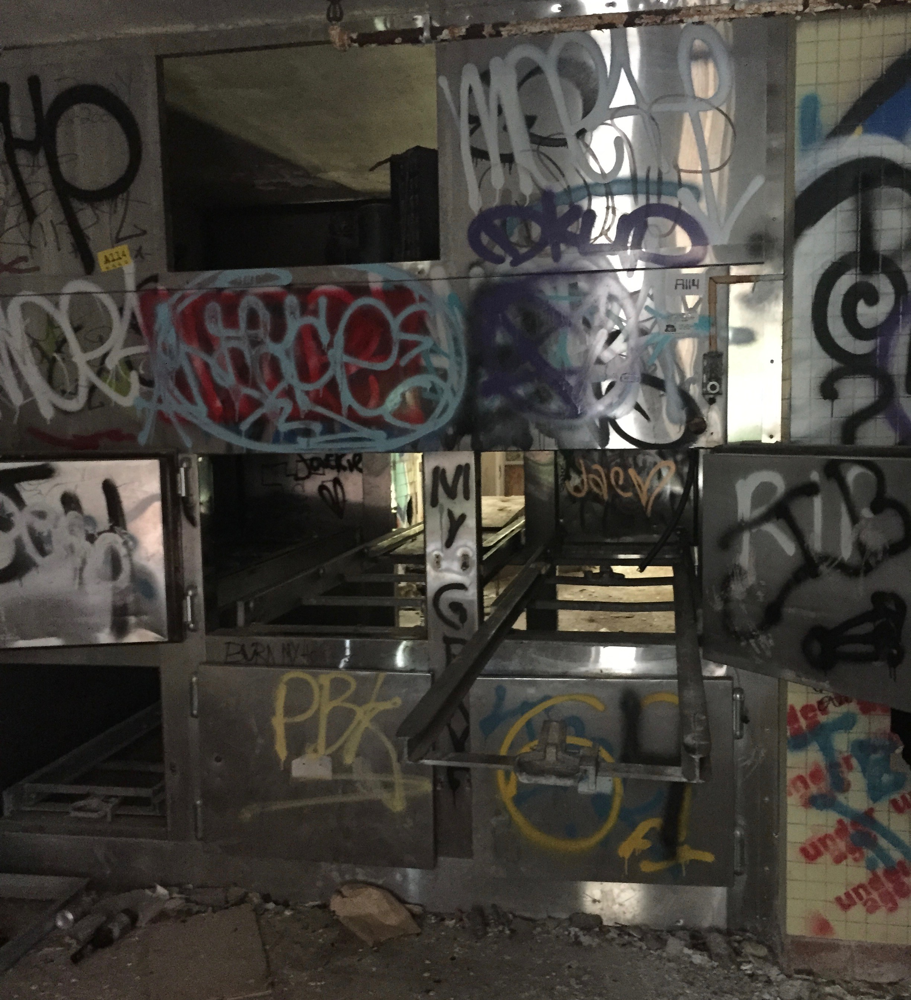
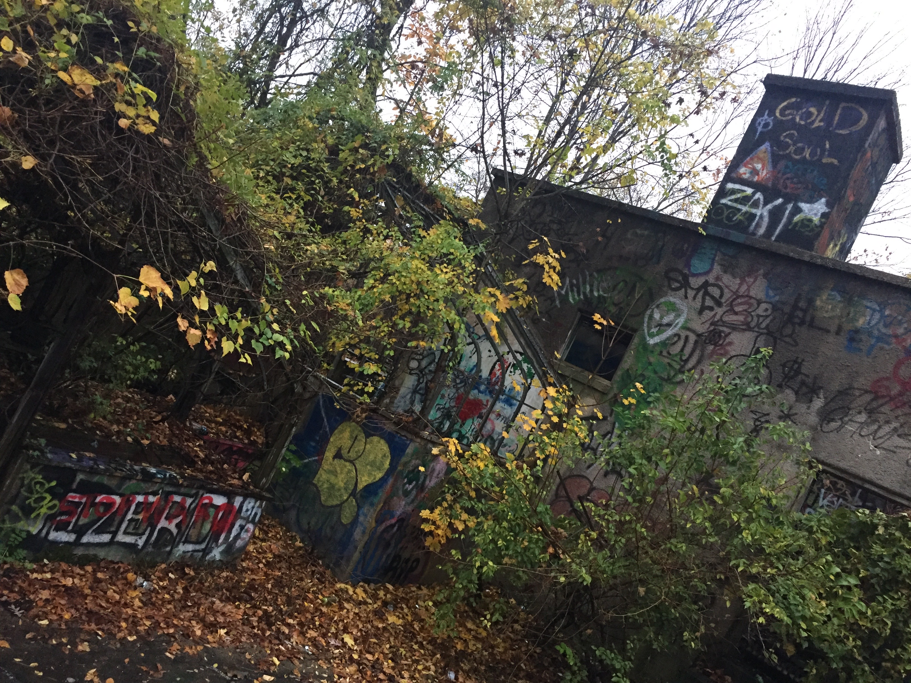
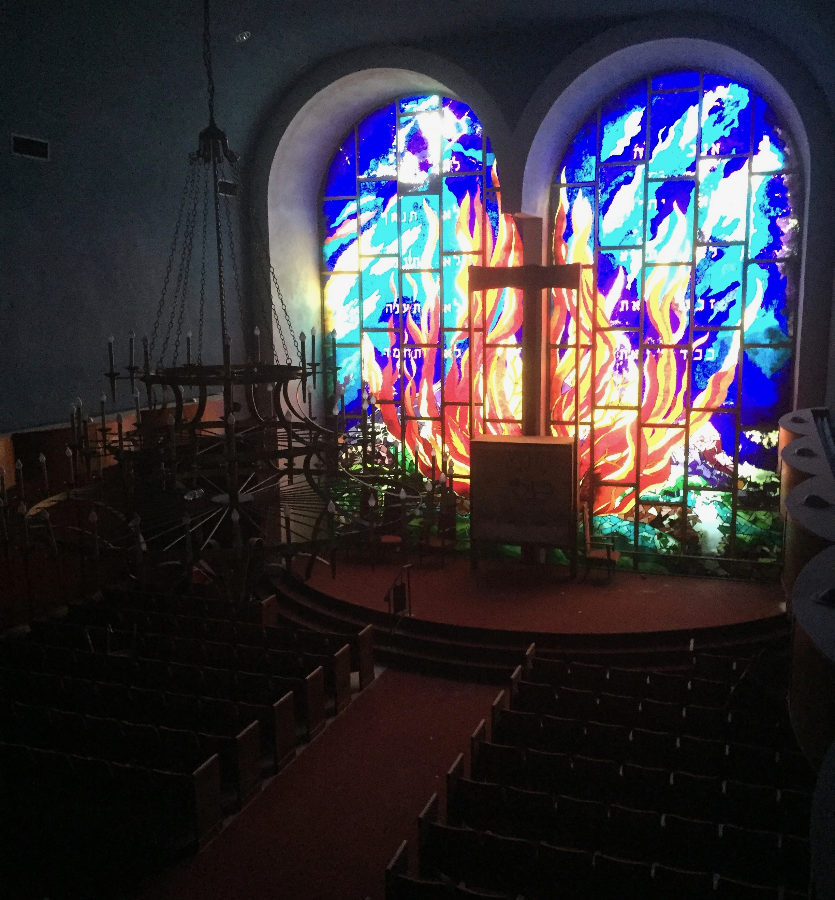

- ~ Located in Kings Park, Long Island ~
- ~ +100 buildings made up Kings Park hospital ~
- ~ Closed down, and left abandoned since 1996 ~
- ~ Became obsolete due to low patient count ~
- ~ Depicted in the photo is Kings Park's morgue ~

- ~Located in Glen Cove, New York~
- ~Once the vast estate of an oil tycoon~
- ~Abandoned in 1969 after owners' deaths~
- ~Home to a derelict greenhouse~
- ~Surprisingly, it's legal to explore~

- ~Located in Newport, Rhode Island~
- ~Originally a wealthy lawyer's dream house~
- ~Overtaken by U.S. forces during WWII~
- ~After WWII, The Bells was left abandoned~
- ~Pictured is the abandoned carriage house~

- ~Located in Hope Valley, Rhode Island~
- ~Was once a tiny, quaint theme park~
- ~Left abandoned within the last decade~
- ~Only a go-kart track and mini
- golf course remain~

- ~Located in Syosset, Long Island~
- ~Was left abandoned just 7 years ago~
- ~Condemned by the Dept. of Buildings~
- ~Deserted after reports of
- embezzlement were unearthed~

- ~Located in Montauk, New York~
- ~Was an Air Force base from 1929 to 1980~
- ~Initially built to resemble a fishing village~
- ~Most prominent feature is its radio tower~
- ~Home to conspiracy theories galore~